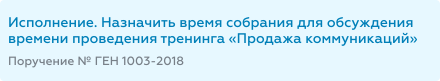
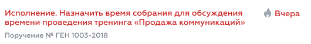

Маркировка задач
В Riverdoc приняты следующие обозначения задач в зависимости от их статуса:
Статус задачи/пример |
Комментарий |
Новая (или неоткрытая)  |
•фон – голубой; •название задачи – шрифт синего цвета. |
Прочитанная (пользователь открыл карточку задачи)
|
•фон – прозрачный; •название задачи – шрифт синего цвета. |
Просроченная (пользователь не завершил задачу в поставленный срок)  или
|
•название задачи – шрифт красного цвета; •фон – прозрачный или голубой (в зависимости от того, прочитана или не прочитана просроченная задача); |


В каком формате записывается название задачи
По умолчанию полное название задачи формируется из имени задачи, инструкции к задаче и названия процесса/поручения, по которому проходит эта задача:

•Имя задачи – название задачи: системное (в случае поручения) или указанное администратором при настройке процесса (в случае задачи по процессу).
•Инструкция – значение обязательного поля Инструкция, которое пользователь заполняет при создании поручения или задачи по процессу. Также инструкция может быть предзаполнена администратором в настройках процесса, но доступна пользователю для редактирования.
•Название процесса – название процесса/поручения, по которому выполняется задача.